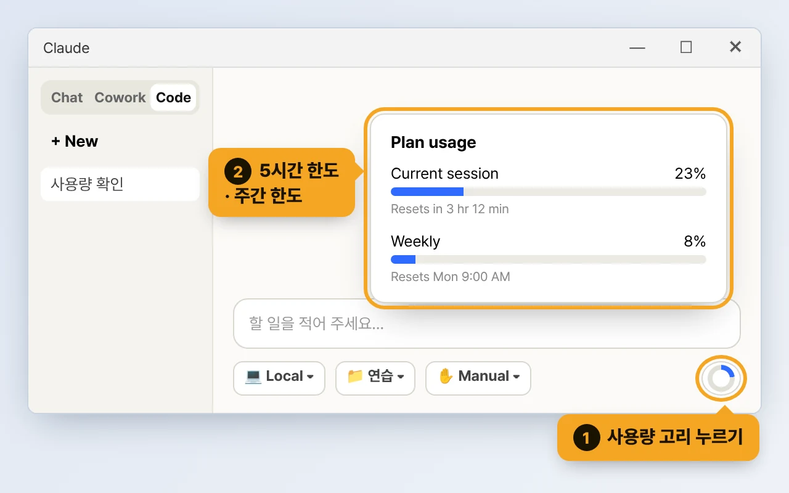
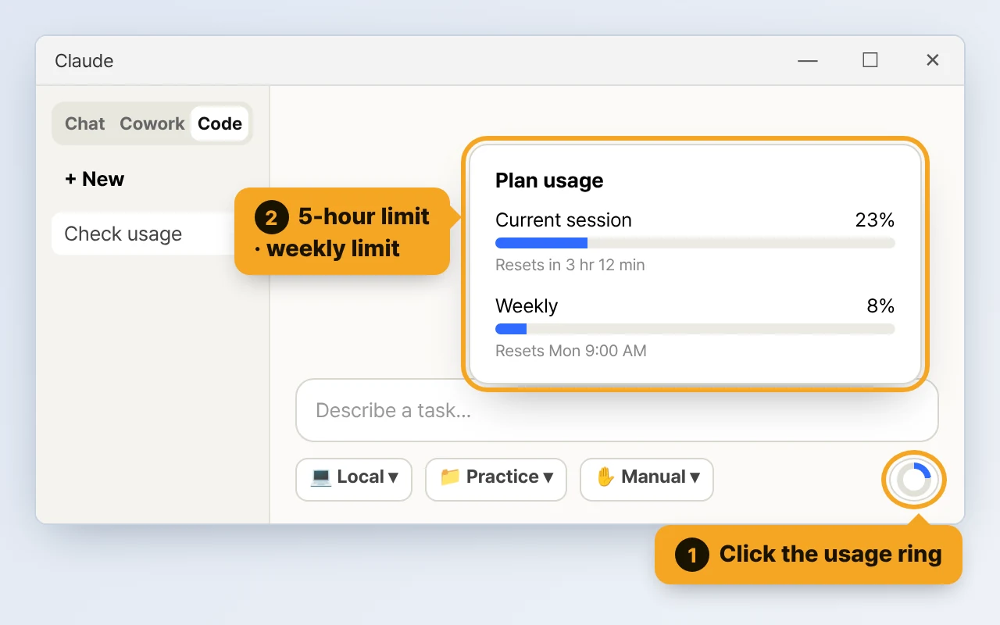

👆 이 내용은 버튼 따라 하는 실습으로도 있어요. 처음이라면 실습으로 직접 해 보고, 이 글은 복습할 때 보세요. 실습 시작하기 →
※ 글 속 그림은 따라 하기 쉽도록 그린 예시입니다. 실제 앱 화면과 모양·글자가 조금 다를 수 있어요. 요금과 한도는 2026년 11월 공식 안내 기준이며 바뀔 수 있어요.
오늘 새로 배우는 것
Claude를 매일 쓰다 보면 "얼마나 쓸 수 있지?", "갑자기 멈추면 어떡하지?"가 궁금해져요. 오늘은 요금제와 사용량 한도를 알고, 내 사용량을 보는 법을 익혀요.
1. 요금제 한눈에 보기
| 요금제 | 가격 (미국 달러, 세금 별도) | Claude Code |
|---|---|---|
| Free (무료) | $0 | 못 써요 (채팅만) |
| Pro | 월 $20 (1년 결제 시 월 $17) | 포함. 이 과정은 Pro면 충분해요 |
| Max | 월 $100 (Pro의 5배 사용량) | 포함 |
| Ultra | 월 $200 | 포함 |
나라와 시기에 따라 달라질 수 있으니 정확한 금액은 claude.com/pricing에서 확인하세요. 회사용 Team·Enterprise 요금제도 있어요.
2. 사용량 한도는 두 가지예요
유료 요금제도 무제한은 아니에요.
| 한도 | 언제 다시 채워지나요 |
|---|---|
| 5시간 한도 | 첫 메시지를 보낸 때부터 5시간마다 |
| 주간 한도 | 계정마다 정해진 요일·시각에 일주일마다 |
3. 내 사용량 보기
Code 탭 입력 칸 아래 줄 오른쪽의 작은 동그라미(사용량 고리)를 누르세요. Current session(5시간 한도)과 Weekly(주간 한도)가 몇 % 찼는지, 언제 다시 채워지는지 보여요.

고리가 안 보이면 웹 브라우저에서 claude.ai/settings/usage(설정 → Usage)로 들어가도 같은 내용을 볼 수 있어요.
4. 아껴 쓰는 요령
- 일이 바뀌면 새 대화(3편): 대화가 길수록 매번 읽을 내용이 많아져 더 많이 써요.
- 구체적으로 부탁하기: "날짜순으로, 표로"처럼 말하면 다시 시키는 일이 줄어요.
- 큰 일은 Plan 먼저(5편): 계획을 고친 뒤 실행하면 헛걸음이 줄어요.
- 필요한 파일만 보여 주기: 큰 파일·사진을 여러 개 붙이면 많이 써요.
- 사용량이 많이 찼다면 큰 일은 초기화 뒤로 미루기.
5. 한도에 닿으면?
- Claude가 잠시 멈추고, 언제 다시 쓸 수 있는지 알려 줘요.
- 지금까지 한 일과 대화는 그대로 남아요. 다시 채워진 뒤 같은 대화에서 "이어서 해줘"라고 하면 돼요.
- 자주 부족하다면 그때 더 큰 요금제를 생각해 보세요. 처음부터 비싼 요금제를 고를 필요는 없어요.
오늘 배운 것
- Claude Code는 Pro 이상에서 쓸 수 있다. 이 과정은 Pro면 충분하다.
- 5시간·주간 한도가 있고, 채팅과 Code가 같이 쓴다.
- 사용량은 사용량 고리 또는 claude.ai/settings/usage에서 본다.
이것으로 데스크톱 입문 8편을 모두 마쳤어요. 다음 과정에서는 엑셀(CSV) 정리, 문서 요약, 보고서 초안 같은 실무 활용을 다뤄요. 실무 1편부터 시작하기 →
※ The pictures in this guide are illustrations to make it easy to follow. The real app may look a little different or use different words. Prices and limits follow the official information as of November 2026 and may change.
What you'll learn today
Once you use Claude every day, you'll wonder "How much can I use?" and "What if it suddenly stops?" Today you'll learn about plans and usage limits, and how to check your own usage.
1. Plans at a glance
| Plan | Price (US dollars, before tax) | Claude Code |
|---|---|---|
| Free | $0 | Not included (chat only) |
| Pro | $20/month ($17/month billed yearly) | Included. Enough for this course |
| Max | $100/month (5× Pro usage) | Included |
| Ultra | $200/month | Included |
Prices can vary by country and change over time, so check claude.com/pricing for exact amounts. There are also Team and Enterprise plans for companies.
2. There are two usage limits
Even paid plans aren't unlimited.
| Limit | When it refills |
|---|---|
| 5-hour limit | Every 5 hours, counting from your first message |
| Weekly limit | Every week, at a fixed day and time set for your account |
3. Check your usage
Click the small circle (usage ring) at the right of the row under the Code tab's typing box. It shows what % of Current session (5-hour limit) and Weekly you've used, and when each refills.

If you can't see the ring, open claude.ai/settings/usage (Settings → Usage) in a web browser for the same information.
4. Tips to use less
- New job, new chat (guide 3): longer chats mean more to read each time, so they use more.
- Be specific: "by date, as a table" means fewer do-overs.
- Plan big jobs first (guide 5): fixing the plan before running it avoids wasted work.
- Share only what's needed: attaching many big files or pictures uses more.
- If usage is high, save big jobs for after the reset.
5. If you hit the limit
- Claude pauses and tells you when you can use it again.
- Your work and chats are kept. After it refills, say "carry on" in the same chat.
- If you often run short, then consider a bigger plan. There's no need to start with an expensive one.
What you learned today
- Claude Code needs Pro or higher. Pro is enough for this course.
- There are 5-hour and weekly limits, shared by chat and Code.
- Check usage with the usage ring or at claude.ai/settings/usage.
That completes all 8 basic desktop guides. The next course covers real work like spreadsheet (CSV) cleanup, document summaries and report drafts. Start with Work guide 1 →